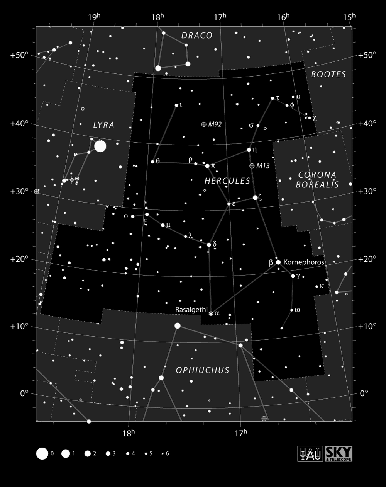

夏の星座と天の川

こと座
ベガ(α星)
・明るさは0等星です(普通の1等星の2.5倍明るい星です)。
・七夕のおりひめ星です(7/7 以外は働かされていると言う伝説があるが、現代ではもちろん法律違反)。
・年末年始の時期以外のほぼ一年中見ることができます。
・地球からの距離は25光年です。
惑星状星雲 M57
はくちょう座
星座について
・デネブは地球から最も遠い一等星(2500光年〜3000光年)です。
・アルビレオは見かけの二重星です。
・北十字星と呼ばれることもあります。
・神話ではふたご座のカストル・ポルックス兄弟の父親です。
わし座
星座について
・アルタイルは七夕のひこ星です。
・神話ではみずがめ座の少年:ガニメデを天に連れてきた神の使いです(現代ではもちろん法律違反)。
・ベガとの距離はおよそ14光年です。光の速さでも14年かかるので量子テレポーテーションが必要？
へびつかい座
星座について
・神話では死者も生き返らせる医者
・死者がいなくなるという理由で雷に打たれ、理不尽な最期をとげる。
・黄道にある星座なのに誕生日の星座からのけものにされる。
・神話から誕生日まで扱いが世間の理不尽そのものを体現しているような星座
球状星団
ヘルクレス座

星座について
・神話で最も有名な勇者です。
・退治された魔物の多くが星座になっています(かに座, しし座, うみへび座, りゅう座)
・おおいぬ座はヘルクレスが連れてきた地獄の番犬「ケルベロス」の星座という説もあります。
・流れ弾に当たってしまった二人のケンタウルスも星座になっています(いて座, ケンタウルス座)。
・「ヘルクレス」はラテン語の発音で、英語では「ハーキュリーズ」、フランス語では「エルキュール」と読むそうです。
球状星団:M13
さそり座

星座について
・女神ヘラが勇者オリオンに嫌がらせするために放ったさそりと言われています(よいこは真似しないでね)。
・オリオン座に張り合うような三つ星 → 一等星アンタレス → S字が特徴の星座
・星座の星のいくつかは Cr302 と言う散開星団の中にあります。
アンタレス
・1等星アンタレスは太陽の700倍の大きさ
球状星団:M4
いて座
星座について
・神話ではケイローンと言う頭の良いケンタウルス
・南斗六星がある
いて座A* : 天の川の中心にあるブラックホール
・天の川にはおよそ2000億個の恒星があります。
・中心には非常に大きなブラックホールがあります(いて座 A*)